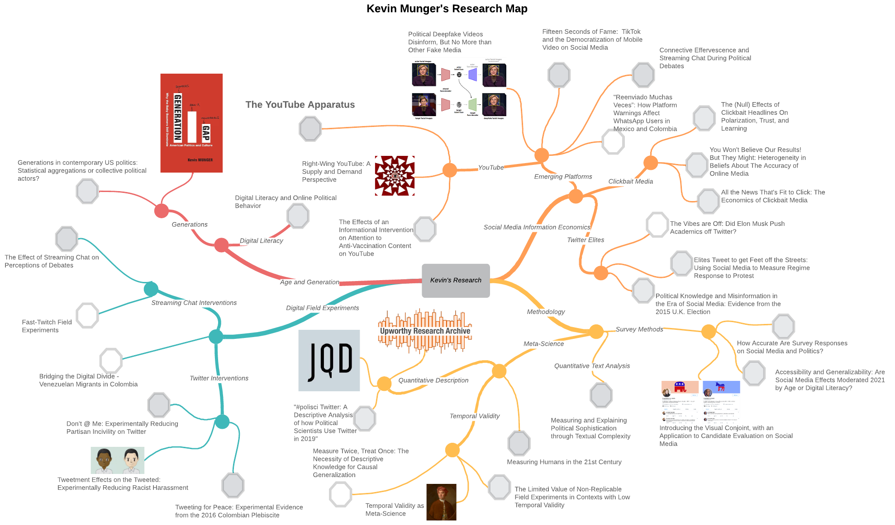
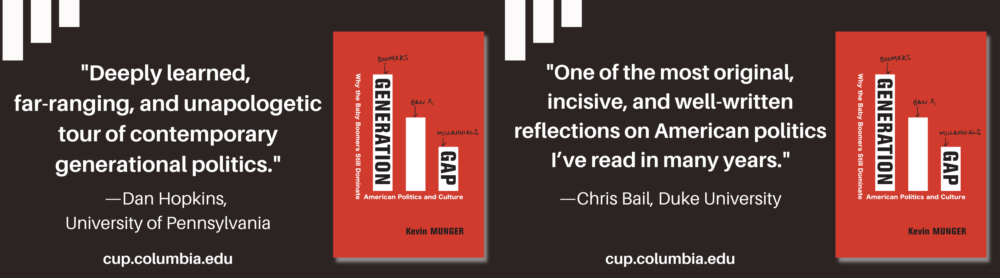

Kevin Munger

Curriculum Vitae
Google Scholar
Blog
Generation Gap
The YouTube Apparatus
Github: kmunger
Email: First Name Last Name at Gmail
Present Address
Badia Fiesole
Florence, IT
Welcome!
I am Assistant Professor and hold the Chair of Computational Social Science in the Department of Political and Social Sciences at the European University Institute, in Florence. I study the communication of political information on the internet, and how to make digital social science make sense.
I have a blog discussing social science methodology, political communication theory and the practice of culture and politics --- and how the internet has changed each of them. I am also a contributor to the august Crooked Timber.
Here's a "Mind Map" of my research so far, organized into four main sections.
The YouTube Apparatus, was published in 2024 by Cambridge University Press (Elements in Political Communication Series). The book builds on my research on the supply and demand for content, analyzing fifteen years of data from political channels on YouTube. It also investigate the meta-scientific question of how we set the academic agenda--and introduces the concept of "poetic validity." This a Gold Open Access Publication; you can download the full manuscript here.

My first book, Generation Gap: Why the Baby Boomers Still Dominate American Politics and Culture, was published by Columbia University Press in the summer of 2022. The book theorizes "Boomer ballast" as a major force in the 2020s and 2030s, a force directly in tension with the ephochal shifts in information technology.
Peer-Reviewed Publications
"Political Deepfakes are as Credible as Other Fake Media and (Sometimes) Real Media" (with Soubhik Barari and Christopher Lucas). Journal of Politics, 2025
"Thirst Traps and Quick Cuts: The Effects of TikTok ‘Edits’ on Evaluations of Politicians" (with Valerie Li). Social Media + Society, 2025
"Pressing Play on Politics: Quantitative Description of YouTube" (with Matt Hindman, Omer Yalcin, Joseph Phillips, and James Bisbee). Journal of Quantitative Description: Digital Media, 2025
The YouTube Apparatus, Cambridge University Press, 2024
"'Reenviado Muchas Veces': How Platform Warnings Affect WhatsApp Users in Mexico and Colombia" (with Angel Villegas-Cruz, Jorge Gallego, and Mateo Vásquez-Cortés). Political Communication, 2024
"Temporal Validity as Meta-Science" . Research & Politics , 2023
"Generations in Contemporary US Politics: Statistical Aggregations or Collective Political Actors?" (with Eric Plutzer). Politics, Groups & Identities, 2023
"Fifteen Seconds of Fame: TikTok and the Supply Side of Social Video" (with Benjamin Guinaudeau and Fabio Votta). Computational Communication Research , 2022. APSA ITP award for Best Paper published in in 2022
"Digital literacy and online political behavior" (with Andy Guess). Political Science Research & Methods, 2022
"The Effect of Streaming Chat on Perceptions of Political Debates" (with Victoria Asbury-Kimmel, Katherine McCabe, Tiago Ventura and Keng-Chi Chang). Journal of Communication, 2021
"The Upworthy Research Archive: A Time Series of 32,488 Experiments in U.S. Advocacy" (with J. Nathan Matias, Marianne Aubin Le Quere, and Charles Ebersole). Nature: Scientific Data, 2021
"Connective Effervescence and Streaming Chat During Political Debates" (with Katherine McCabe, Tiago Ventura and Keng-Chi Chang). Journal of Quantitative Description: Digital Media, 2021
"You Won't Believe Our Results! But They Might: Heterogeneity in Beliefs About The Accuracy of Online Media" (with Jonathan Nagler, Joshua Tucker and Mario Luca). Journal of Experimental Political Science, 2021
"Accessibility and Generalizability: Are Social Media Effects Moderated by Age or Digital Literacy?" (with Jonathan Nagler, Joshua Tucker and Ishita Gopal). Research & Politics, 2021
"Political Knowledge and Misinformation in the Era of Social Media: Evidence from the 2015 U.K. Election" (with Patrick Egan, Jonathan Nagler, Jonathan Ronen and Joshua Tucker) British Journal of Political Science, 2020
"#polisci Twitter: A Descriptive Analysis of how Political Scientists 2020 Use Twitter in 2019" (with Jim Bisbee and Jennifer Larson) Perspectives on Politics, 2020
"Right-Wing YouTube: A Supply and Demand Perspective" (with Joseph Phillips) International Journal of Press/Politics, 2020
"All the News That’s Fit to Click: The Economics of Clickbait Media." Political Communication, 2020
"Experimentally Reducing Partisan Incivility on Twitter" Journal of Experimental Political Science, 2020
"The (Null) Effect of Clickbait" (with Jonathan Nagler, Joshua Tucker and Mario Luca). Public Opinion Quarterly, 2020
"Tweeting for Peace: Experimental Evidence from the 2016 Colombian Plebiscite" (with Jorge Gallego, Juan D. Martinez y Mateo Vasquez). Electoral Studies, 2019
"Elites Tweet to Get Feet Off the Streets: Measuring Regime Response to Protest Using Social Media" (with Richard Bonneau, Jonathan Nagler and Joshua Tucker). Political Science Research & Methods, 2019
"Measuring and Explaining Political Sophistication Through Textual Complexity" (with Arthur Spirling and Ken Benoit). American Journal of Political Science, 2019
Replication Materials 'sophistication' R package
"How Accurate Are Survey Responses on Social Media and Politics?" (with Andrew Guess, Jonathan Nagler and Joshua Tucker). Political Communication, 2019
"Tweetment Effects on the Tweeted: An Experiment to Decrease Online Harassment". Political Behavior, 2017. APSA EPVOB award for Best Paper published in Political Behavior in 2017
"Choosing in Groups: Analytical Politics Revisited" (with Michael C. Munger). Cambridge University Press, 2015
Other Scholarly Publications
"Enough?" (with Drew Dimmery). Observational Studies, 2025
"What Did We Learn About Political Communication from the Meta2020 Partnership?". Political Communication, 2025
"Temporality and Truth in Connected in Isolation". International Journal of Communication, 2024
"Quantitative Description of Digital Media: A Modest Proposal to Disrupt Academic Publishing" (with Andrew Guess and Eszter Hargittai). Journal of Quantitative Description, 2021
"The Limited Value of Non-Replicable Field Experiments in Contexts with Low Temporal Validity". Social Media + Society, 2019
"Social Media, Political Science, and Democracy". Journal of Politics, 2019
"Frenemies: How Social Media Polarizes America". Public Opinion Quarterly, 2019
"The Dumbing Down of the State of the Union? Trends in the Complexity of Political Communication" (with Ken Benoit and Arthur Spirling). In Can America Govern Itself?, Cambridge University Press
Some Popular Blog Posts
Selected Popular Press
Universities Should Abandon X The Chronicle of Higher Education
“The Algorithm” Does Not Exist Mother Jones
Tipping the Scale Real Life
Hello Goodbye Real Life
The Rise and Fall of the Palo Alto Consensus The New York Times
Teaching
I have taught several semesters of Introduction to Data Science, using both R and Python, as well many courses on Text as Data. Course materials are located on my github, and are free for anyone to use, either for teaching or learning.
Jupyter notebooks for Intro to Data Science
Course materials for Spring 2023 can be found here:
PhD Course in Causal Inference
Course materials for Fall 2022 can be found here:
Advanced undergraduate course in Text as Data
Course materials for Fall 2021 can be found here:
Advanced undergraduate course in Text as Data
PhD Seminar in Media, Social Media and Politics
Course materials for Fall 2019 can be found here:
Advanced undergraduate course in Text as Data
PhD Seminar in Media, Social Media and Politics
Selected Media Coverage
Politicians now tend to be older than they've been historically. It's causing issues NPR, August 2023
The Age of Chat The New Yorker, June 2023
What Was Twitter, Anyway? The New York Times Magazine, April 2023
TikTok Politics and the Era of Embodied Memes The Atlantic, October 2022
YouTube is awash with election misinformation — and it isn’t taking it down Vox, November 2020
Why the Trump campaign is going all-in on YouTube Vox, November 2020
Maybe It’s Not YouTube’s Algorithm That Radicalizes People Wired, November 2019
How the Cambridge Analytica scandal unravelled Vox, October 2019
Old, Online, And Fed On Lies: How An Aging Population Will Reshape The Internet BuzzFeed News, April 2019
How Norms Change The New Yorker, October 2017
Bots aren’t just service tools—they’re a whole new form of media Quartz, April 2017
Telling People to Be Less Racist Online Works, Sometimes New York Magazine, November 2016
Why Online Allies Matter in Fighting Harassment The Atlantic, November 2016
Troll hunters: the Twitterbots that fight against online abuse New Scientist, August 2016